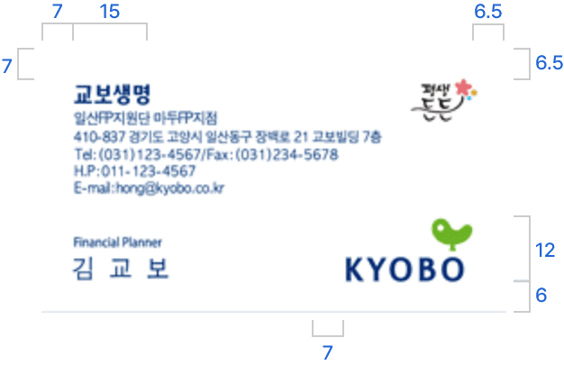
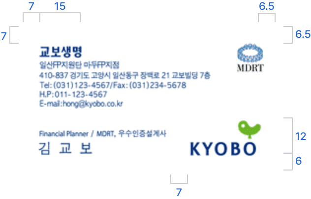
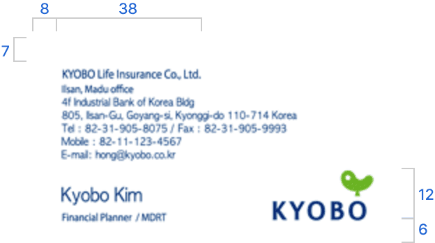
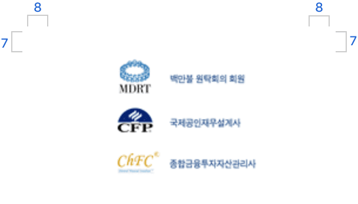
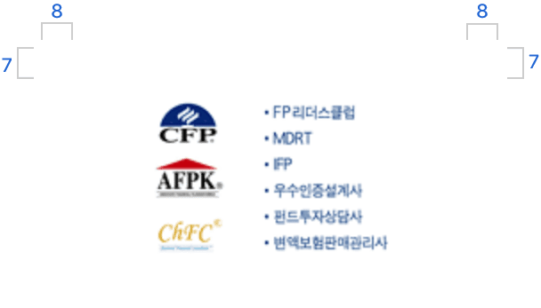

고객중심, 정직과 성실,
도전과 창의
교보생명 CI는 모든 사람들이 평생 소중한 꿈을 이어갈 수 있도록 도와드리는 교보생명의 사명과 교보생명 임직원이 업무수행에 있어 반드시 지켜야 할 신조, 즉 ‘고객중심’, ‘정직과 성실’, ‘도전과 창의’를 담고 있습니다.
워드마크

워드마크는 교보생명을 상징하는 대표적인 시각표현물입니다. ‘교보’ 전체를 상징할 때는 워드마크만 단독으로 사용할 수 있으며, 관계사 및 출연재단을 알리고자 할 때는 각 관계사 및 출연재단의 로고타입을 붙여 사용해야 합니다.
시그니처


시그니처 조합은 워드마크와 한글 또는 영문 로고타입 등과 함께 일정한 규칙에 의한 조합된 것을 말하며, 각각의 요소들을 임의로 다르게 조합하여 사용할 수 없습니다.
컨설턴트 명함 가이드
명함은 교보생명의 첫인상을 전달하는 중요한 매개물입니다. 따라서 작도법과 제작기법을 준수해야 합니다. 교보생명 컨설턴트는 제시된 명함 가이드에 맞게 공간 규정 및 규격 색상을 준수한 명함을 사용해야 합니다.
- 
- 기본형
- 
- MDRT / 우수인증설계사
- 
- 영문
-  
- 응용형